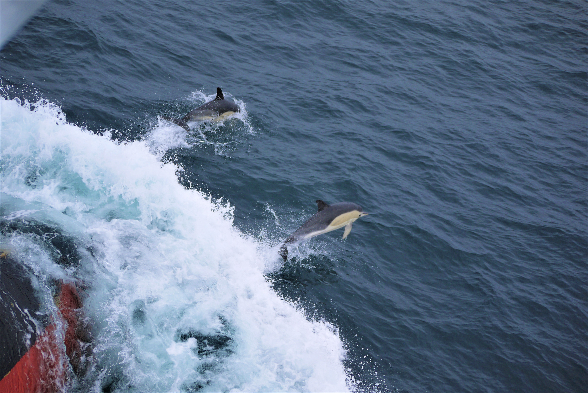

Featured post 
The Last Ship
An account of my first research cruise, at the same time as my first pandemic
Read more
Posts (newest to oldest)
The Last Ship (16/06/2020)
Moorings: The workhorse of the RAPID project (06/06/2020)
First blog post (01/06/2020)